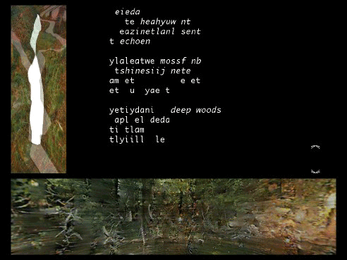

r i v e r I s l a n d Q T
riverIsland rewritten for QuickTime, April 2008 - Version 1.2
Please get back to me with comments, bug reports and suggestions.
c a p t i o n
riverIsland is a navigable text movie composed from transliteral morphs with a few interliteral graphic morphs. It is a spatialized aural poetic environment in which you may also investigate of procedures of textual transformation associated with translation, which are here proposed as transliteral.
More context is available at programmatology.shadoof.net.
r e q u i r e m e n t s
A recent version of QuickTime must be installed on your system, along with a third-party QuickTime component: QSXE. This version of riverIsland has been tested on Mac OS X systems and on Windows XP machines.
t o d o w n l o a d
You may download the QuickTime version of riverIsland and its associated files packed into a zip archive from here.
Once you have unzipped the archive, you should end up with a 'riverisland' folder on your hard disk containing all the necessary files.
t o i n s t a l l
Install the QSXE QuickTime component if you have not already done so. You will find the necessary file or installer in one of the appropriately named folders within the riverisland folder.
Mac OSX
Copy the file QSXEssentials.component to either:
/Library/QuickTime/ (the machine's library)
or
~/Library/Quicktime/ (your user's library)
Windows XP
Double-click and run the QSXE30.EXE installer.
r e a d i n g r i v e r I s l a n d
starting up and closing down
To start: open 'riverIsland.mov' within in the folder 'riverislandQT', then wait for the opening sequence to finish.

To close: Quit or Command-Q.
navigation
There are two ways to navigate. (NB: For those who know previous renditions of riverIsland, some navigational controls have changed in this version.)
Slow, step-wise navigation is done by moving the mouse until it is over one of the directional arrow-like icons in the arrangement to the lower right. Click and hold the mouse button down over an arrow to step and/or keep stepping from one nodal text towards another (by way of an on-the-fly transliteral morph). An icon appears between the directional icons when a nodal text is reached. (Once a node is reached you must 'reset' your momentum by momentarily moving the mouse off the directional arrow. It will be reactivated when you move the mouse back over an arrow.)
The second way to navigate is by dragging one or other of the two QuickTime movies set out along the bottom and to the left of the screen.
When riverIsland opens these movies are both inactive. Simply click on one of them to make it active. This also starts up the spatialized aural environment.
Grab a movie by clicking and holding the mouse button down. While doing so drag the mouse: left or right if you are holding the horizontal panorama; up or down if you are holding the vertical object movie. You will hear audio changes in the active, controlling movie (if, that is, it was also the active movie when you grabbed it). Release the mouse button. When you do so, a dot will appear in the centre of the navigation icons on the lower-right of the screen. Now, if you wish the textual display to morph in order to correspond with the position you have reached, click this dot. The textual display will transliterate to your new 'position'. If you have moved the panorama, the text will morph to a corresponding position in the horizontal sequence of texts; if you were holding the object movie, you will transliterally morph to a corresponding point on the vertical sequence.
At three nodal points in the vertical sequence, a small button appears in the central icon between the directional arrows. Clicking this button displays one of three similar short movies with interliteral graphic morphs through a sequence of different systems of inscription representing the character-'kong'=word-'empty'.
a c k n o w l e d g e m e n t s a n d t h a n k s
Concepts, programming, photography, design and text is by John Cayley. The sequence of sixteen poems arranged in the 'horizontal' loop is composed of Cayley's poetic adaptations from 16 of the 20 quatrains by Wang Wei (701-761) in his famous 'Wang River Sequence'. The 16 texts in the vertical loop are all based on poem number five from this sequence ('kong shan bu jian ren ...') which becomes the opening poem of riverIsland. The variations in this loop include material quoted from Nineteen Ways of Looking at Wang Wei: How a Chinese Poem is Translated (compiled by Eliot Weinberger and Otavio Paz, New York: Moyer Bell, 1987), namely Burton Watson, Gary Snyder, Francois Cheng and Octavio Paz's versions of the poem (on pages 24, 42, 36 and 30 respectively). Arthur Cooper's translation of the poem from his collection The Deep Woods' Business (London: Wellsweep, 1990, p. 43), is also quoted. Recorded readings and atmosphere are by John Cayley, except Harriet Evans for the French, Spanish and Chinese. Thanks to Giles Perring for recording and assisting with digital audio manipulation; Douglas Cape for help in understanding QuickTime and QTVR in particular; Xu Bing for his Squareword calligraphy within the embedded interliteral morphing movies. Authoring and scripting of QuickTime for riverIsland was done in LiveStage Pro versions 2.1 thru 4.6.6 with some behaviors based on PanoSound by Ian Mantripp.
If you wish, please copy and distribute riverIsland, but please do so along with the text file that accompanies it and in the same form and structure as it has been made available to you. I am only interested in the moral rights associated with current copyright law - rights to be associated with the work and (negotiable) interest in its integrity. If anyone wants to send me something in recompense for whatever they derive from my contribution to the piece, they are welcome to do so.
d i s c u s s i o n o f r i v e r I s l a n d
There have been a couple of articles and critical notices of riverIsland, particularly the following:
Engberg, Maria. 'Morphing Into New Modes of Writing: John Cayley's riverIsland.' Leonardo Electronic Almanac, 'New Media Poetry and Poetics' Special Issue, Vol 14, No. 5-6 (2006). [http://leoalmanac.org/journal/vol_14/lea_v14_n05-06/mengberg.asp].
_____. 'Stepping into the River: Experiencing John Cayley's riverIsland.' dichtung-digital 35 (2/2005) [http://www.dichtung-digital.org/2005/2-Engberg.htm].
and also some significant discussion in:
Hayles, N. Katherine. 'The Time of Digital Poetry: From Object to Event,' in Morris, Adalaide, and Thomas Swiss, eds. New Media Poetics: Contexts, Technotexts, and Theories. Cambridge: MIT Press, 2006, pp. 181-210.